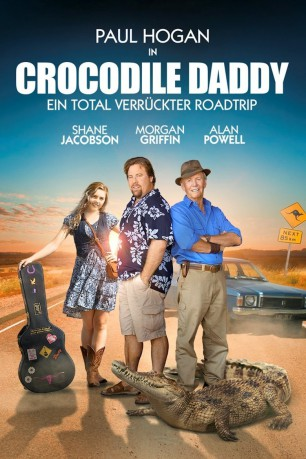

gesehen am 23.01.2016
gesehen am 23.01.2016Alternativ: Charlie & Boots gesehen am 23.01.2016
 
 IMDB-Wertung: 6.5 / 10
IMDB-Wertung: 6.5 / 10  Metascore:
Metascore: 
Um seinen Vater Charlie auf andere Gedanken zu bringen, hat sich Sohnemann Boots etwas Besonderes einfallen lassen. Sein Plan: Sie begeben sich gemeinsam auf ein Abenteuer und erfüllen sich damit einen schon lange gehegten Traum. Sie lassen den Bundesstaat Victoria hinter sich und nehmen Kurs auf Cape York, den nördlichsten Punkt Australiens. Doch der alte Charlie sitzt erst einmal nur schmollend neben seinem Sohn im Wagen und versprüht nicht gerade Freude über die Aussicht einer langen und aufregenden Reise. Doch dann entdecken sie eine Anhalterin und nehmen die junge Jess auch gleich mit. Für Vater und Sohn wird der Trip plötzlich zu einem besonderen Erlebnis und alte Geheimnisse der Familie erscheinen schlagartig in einem ganz anderen Licht.
Jahr: 2009
Dauer: 101 Minuten
FSK: 0
Land: Australien Studio: Sunfilm EntertainmentTonspuren: DTS - ,
Untertitel: Deutsch,
Auflösung: 1080p (1920x1080) Größe: 9615 MB
Genre: Drama, Komödie, Abenteuer
Regisseur: Dean Murphy
Drehbuch: Stewart Faichney, Dean Murphy
Soundtrack: Dale Cornelius
Darsteller:
 Paul Hogan als Charlie
Paul Hogan als Charlie Shane Jacobson als Boots
Shane Jacobson als Boots Roy Billing als Roly
Roy Billing als RolyDatei: X:\4-Tetralogie(A-K)\Crocodile Dundee\Crocodile Daddy (2009, FSK, 1920x1080).mkv seit 13.11.2015
Festplatte: HD Collection-3(N-Z)-6(A-Z)
 Es gibt insgesamt 7 Filme in der Gruppe '4-Tetralogie(A-K)\Crocodile Dundee'
Es gibt insgesamt 7 Filme in der Gruppe '4-Tetralogie(A-K)\Crocodile Dundee'